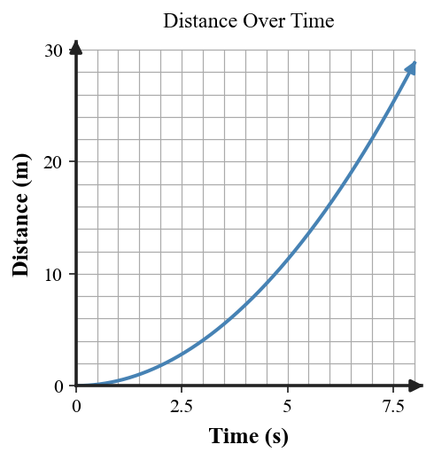
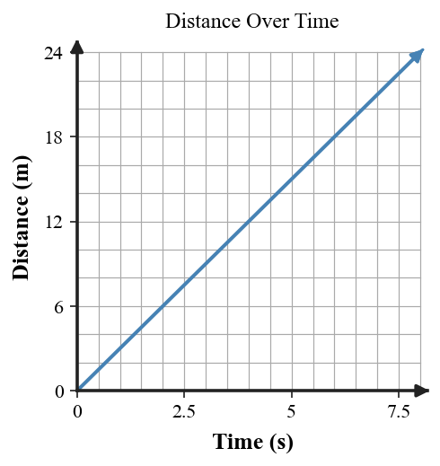
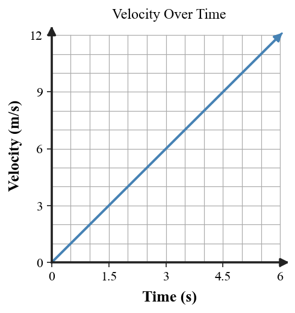

Six-question DOK check for Section 2.5: 2 DOK 1, 2 DOK 2, 1 DOK 3, and 1 DOK 4.
State what the direction of a velocity-vector arrow represents.
On a distance-time graph, what does increasing steepness usually indicate?

Use the constant-spacing dot diagram to describe the object’s motion and explain the evidence.
Use the curved distance-time graph to explain why the object is speeding up.
A graph, data table, and story all describe a cart. Explain a systematic way to check whether all three representations agree.

| Time | 0 | 1 | 2 | 3 |
|---|---|---|---|---|
| Distance | 0 | 3 | 6 | 9 |
Build a complete motion story for a cart rolling down a ramp using the ramp scene, a motion-dot model, a velocity-time graph, and evidence from how each representation changes over time.
